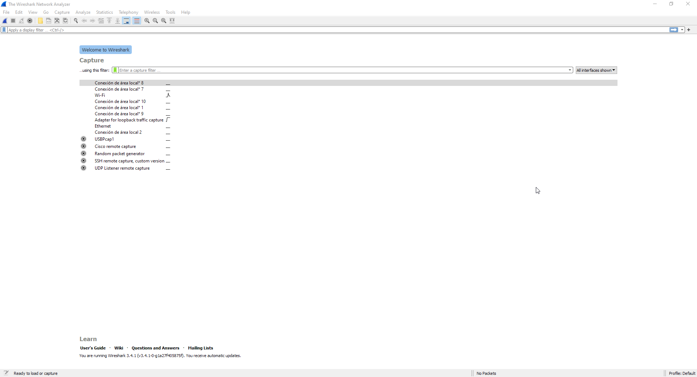
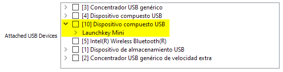
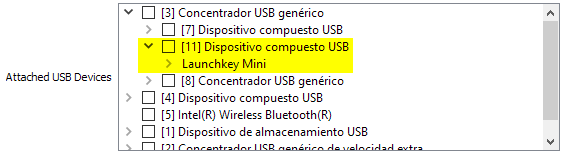
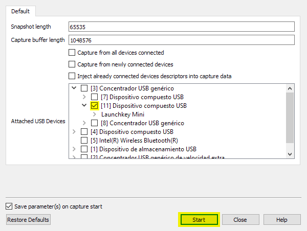
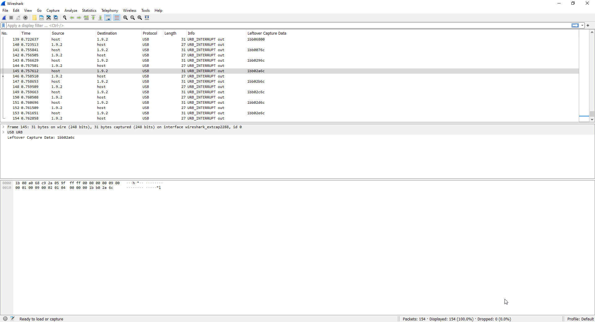

This guide is still under-development.
On Windows, due to how MIDI is implemented, device assignations are exclusive. This means two software cannot connect to the same MIDI device at the same time. Trying to do this will result in an error on the 2nd software you are trying to connect saying other software is already using the device so the connection cannot be done. Because of this, doing man-in-the-middle MIDI sniffing on Windows isn’t possible. At least in theory…
While the MIDI stack on Windows doesn’t allow you to do so, you can go lower: the USB stack. You can monitor the USB messages being sent and received to/from your device using Wireshark and USBPcap.
Note
Since this method directly captures raw USB data, it might not work if your manufacturer uses a proprietary driver that directly handles your device, as this article describes how to deal with MIDI messages that get directly sent and received from the device through USB and isn’t intended to be used with devices that require an intermediate piece of software between the controller and the DAW to handle their functionality. Trying to do so might result in getting USB packets with a completely different set of data from the ones shown in this article.
Download the Wireshark installer, run it to install Wireshark and when the installer asks you to install USBPcap, tell it to do so as well. After rebooting your PC, connect your MIDI device, run Wireshark as an administrator and you should be greeted with this:
What we will use is the USBPcap1 capture interface. By default it will capture any USB data coming in and out of your PC, which is inconvenient for both inspection and privacy reasons (in case you want other people to look at the USB events you recorded.). To avoid this, we can tell Wireshark to only capture traffic related to specific device. On Wireshark’s main page (the one shown above), click on the gear icon at the left of the USBPcap1 name on the list of capture interfaces to access its settings.
Deselect Capture from all devices connected, Capture from newly connected devices, Inject already connected devices descriptors into capture data and everything on the Attached USB Devices list as well.
The Attached USB Devices list contains all the physical USB devices connected to your PC (marked with [device_number]), as well as any virtual device they generate.
Look for your MIDI device by unfolding the different sub-lists based on this:
If you connected your device directly to your PC, then there’s a high chance it will be one of the first few ones showing up on the root of the list.
If you connected your device through something like a USB hub, then you will have to first unfold the sub-list of that USB hub before you get to see the actual MIDI device.
Once you locate it, mark it and click on the Start button to start capturing USB traffic.
Running a DAW the manufacturer of your device officially supports should start registering the MIDI messages happening between your device and the DAW. All the USB packets sent between your PC and your MIDI device will be monitored and shown in Wireshark.
Name |
Example |
Description |
|---|---|---|
Number |
|
The number of the packet. |
Time |
|
Time of the message (measured in nanoseconds) since the 1st received message. |
Source |
|
The source of the message:
|
Destination |
|
The device the message is being sent to. It follows the same scheme as the Source property. |
Protocol |
|
The protocol the packet is using. |
Length |
|
The length of the packet in bytes. |
Info |
|
The USB transfer type. |
Leftover Capture Data |
|
The actual information being sent on the message. |
All the USB packets (lines) with MIDI messages will have a Leftover Capture Data field on their details, which will contain the actual MIDI data. It will be structured with
header and wrapper bytes each three MIDI bytes: HH mm mm mm HH mm mm mm HH mm mm mm HH mm ..., where HH are the header/wrapper bytes and should be ignored when reading
a USB packet’s leftover data as a MIDI message. Following this, the MIDI message contained on the USB packet described on the table above isn’t 1B B0 2A 6C but B0 2A 6C.
Tip
You can make Leftover Capture Data appear directly on the packets list, as well as any other packet properties, by right clicking on them on the details view and selecting Apply as Column. This way, you won’t have to click on a USB packet to see if it contains MIDI data or not.